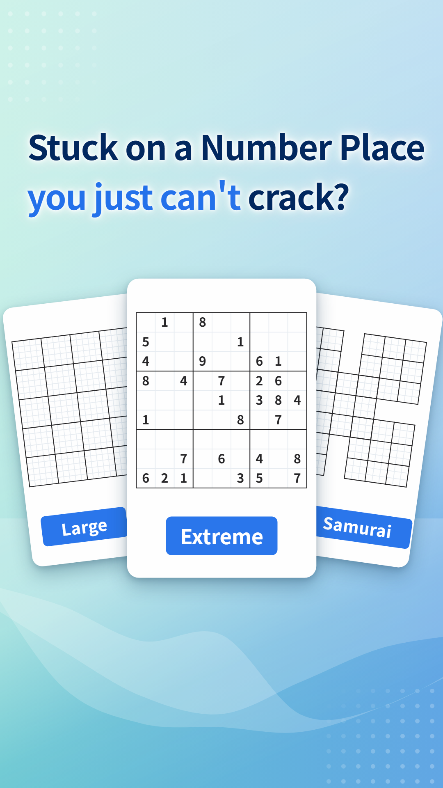
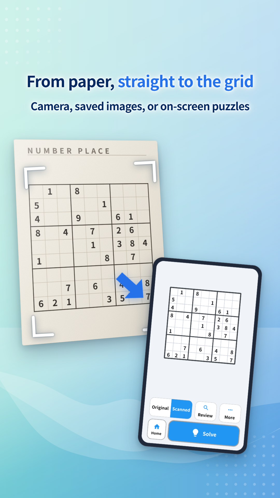
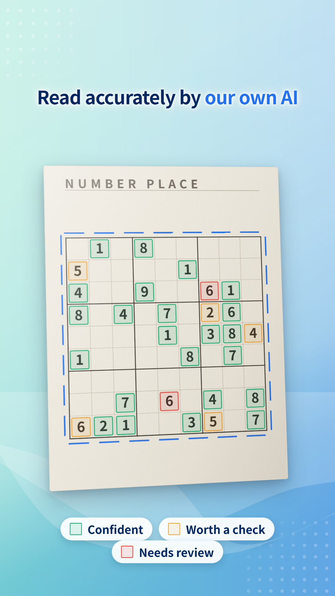
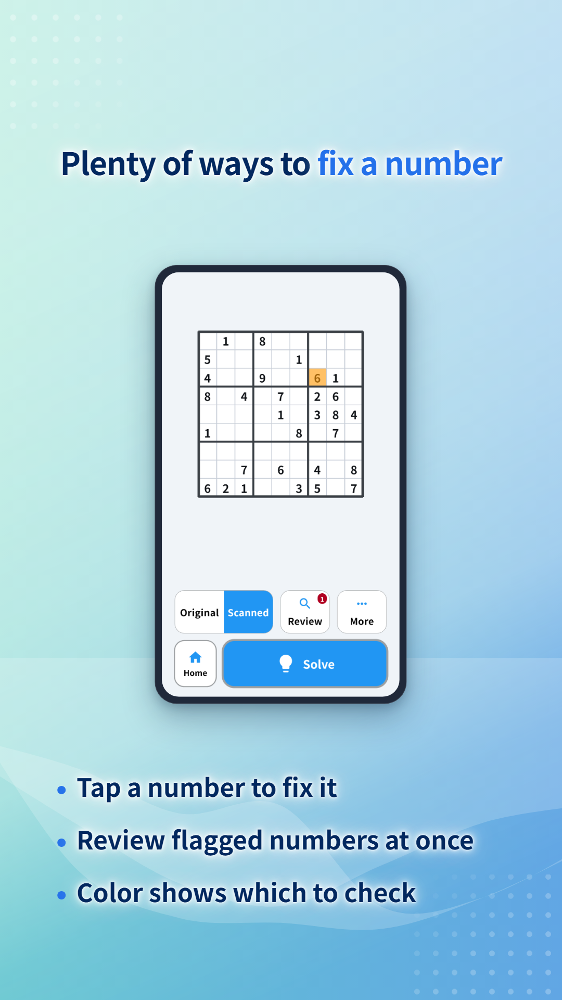
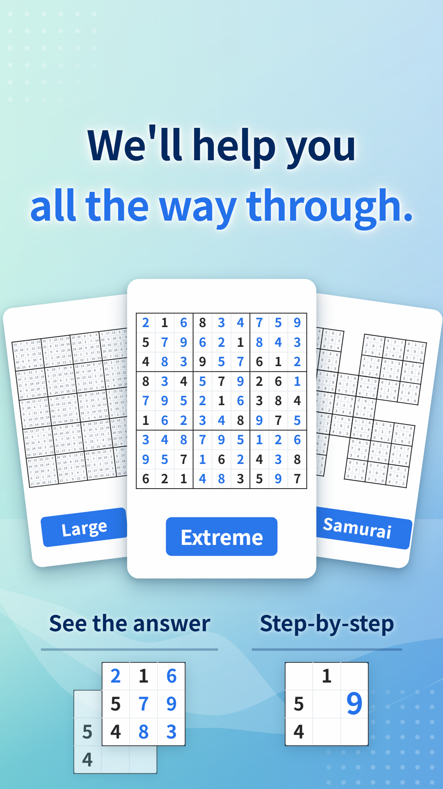
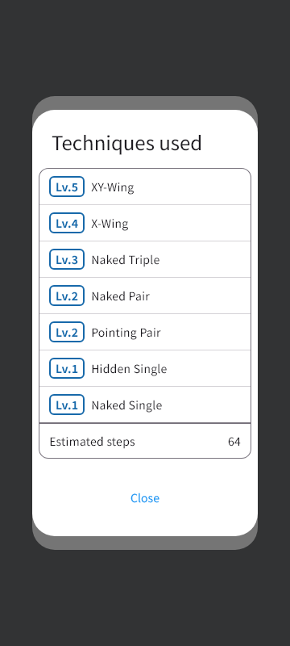
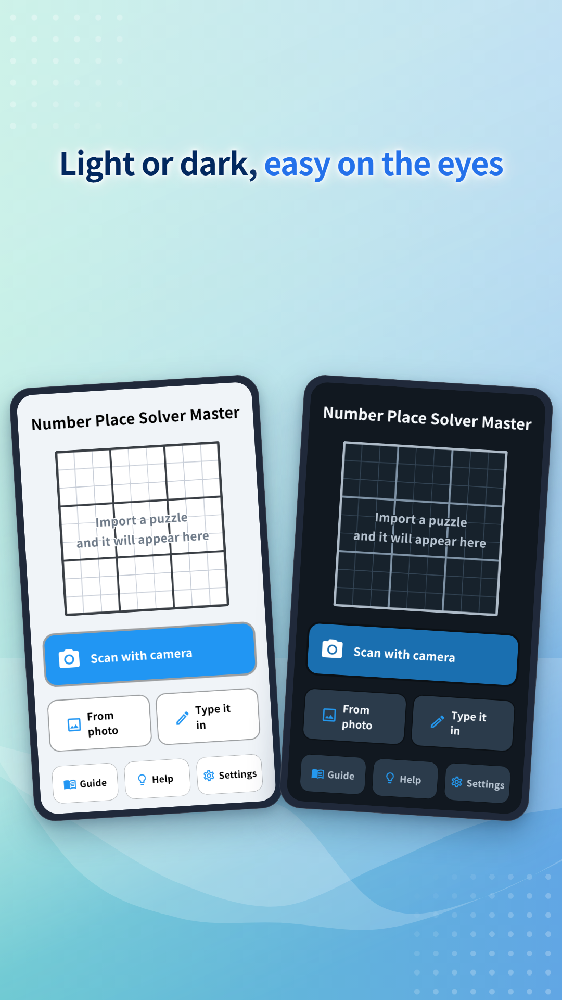

Number Place Solver Master Features
Number Place Solver Master reads Number Place puzzles from newspapers and magazines with your camera, then shows you the answer or the next step. This page walks through what it can do, one feature at a time, with screens from the app.
9×9, large and combination grids, all solved the same way
Besides the standard 9×9, the app reads large grids of 16×16, 25×25 and 30×30, and combination puzzles where grids overlap, such as Samurai. Combination puzzles are tested with up to 14 overlapping grids. Grids with two-digit numbers, like 25×25 and 30×30, are read as they are.
The bigger the grid, the more there is to type in by hand.
| Grid | Cells |
|---|---|
| 9×9 | 81 |
| 16×16 | 256 |
| Samurai (5 overlapping grids) | 369 |
| 25×25 | 625 |
| 30×30 | 900 |
Whatever the grid, the steps from taking the photo onward are the same as for 9×9.

Puzzles on paper and on screen
Newspapers, magazines and puzzle books
Take a photo of the grid with the app's camera. Fit the whole grid in the frame and shoot it as straight on as you can.
Puzzles in apps or on the web
Just pick a screenshot or a saved image. The lines are sharper than on paper, so recognition is more reliable.

Every digit shows how sure the app is
Digits are read by our own AI, trained on Number Place grids. Even so, shadows or faint print can cause a misread.
So each digit it reads is colored by how confident the app is about it.
- Confident
- Worth a check
- Needs review
Instead of checking every cell, you only need to look at the colored ones.

Fix a wrong digit on the spot
- Tap to fix: tap the wrong digit and choose the right one.
- Review flagged digits at once: the Review button takes you through the digits worth checking, one by one.
- Compare with the photo: switch between Original and Scanned to compare the photo with what was read.
You can check the reading first and solve only when you are satisfied with it.

See the whole answer, or go one step at a time
Show the answer
Fills in the whole grid at once. Useful for checking a magazine puzzle or your own solution.
Review step-by-step
Shows only the next cell to fill in. Move back and forth to follow which cell is decided in what order. You can look only at the part where you got stuck and solve the rest yourself.
Techniques used
Shows the techniques needed to solve the puzzle, such as Hidden Single, Pointing Pair and X-Wing, with their difficulty level. The estimated number of steps gives you a sense of how hard the puzzle is.


Choose light or dark
Switch between a light and a dark screen. When you compare with a paper puzzle at night, dark mode keeps the glare down.

FAQ
- The app doesn't read my puzzle well.
- Take the photo in good light, with the whole grid in view and not distorted. For a two-page spread, flatten the paper before shooting. After reading, check the colored cells first and fix any mistakes.
- Can a puzzle fail to solve?
- If a digit was misread and the grid contradicts itself, or with some puzzles, solving can stop partway. If that happens, first check the reading for mistakes.
Number Place Solver Master
Read newspaper and magazine puzzles with your camera, or puzzles in apps and on the web from a screenshot, and solve them automatically.